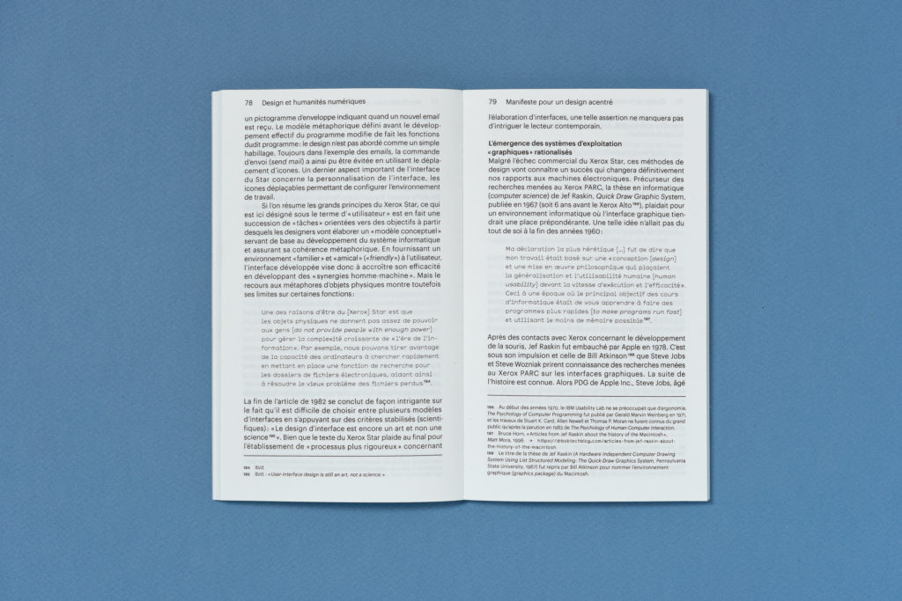

« Design et humanités numériques »
d'Anthony Masure
Notes de lecture

Pourquoi j'ai choisi ce livre
Anthony Masure est un chercheur dont le travail m'intéresse depuis longtemps, il est très actif sur des thématiques du numérique en poussant l'analyse avec un angle critique universitaire, ce qui n'est pas si courant que ça dans mon newsfeed.
Je connais un peu les "digital humanities" anglophones, et de ce que j'en aperçois, c'est très intéressant.
Qu'en est-il chez nous, en francophonie ? Que donne le croisement entre sciences sociales et numérique ?
Il y a aussi que j'ai eu plusieurs conversations autour du design ces derniers mois, et c'est un métier qui génère chez moi pas mal d'inconfort.
Certaines de mes activités s'en approchent, et pourtant si on me demande si je « suis designer », c'est un non catégorique qui sort instinctivement.
Voilà le genre de sujets qui m'intéressent particulièrement :
- - Qu'est-ce que le design ? C'est un domaine qui semble nécessiter une re-définition ou une recontextualisation constante.
- - La place du design dans le monde du libre et de l'open source,
- - Dans des équipes pluridisciplinaires, quelles sont les compétences-clé des designers que l'on tait ? La persuasion ?
- - Pragmatiquement parlant, que fait un designer systémique ? Quelles actions met-il/elle en place au quotidien ?
- - Le développement informatique est-il lui aussi du design, ou de l'architecture, ou les deux ?
- - Quelle est la place du travail affectif dans le design ?
Voilà quelques extraits de la présentation du livre de l'excellente maison d'édition B42, pour situer l'ouvrage :
« En quoi les environnements numériques contemporains actualisent-ils les modes de production et de transmission des savoirs ? [...]
De la modélisation des connaissances à l’injonction à l’innovation et à la créativité, du design d’expérience aux conditionnements techniques, de l’étude de la rationalité numérique aux reconfigurations de la subjectivité, ce parcours réflexif montre que l’industrie des programmes, chaque jour un peu plus puissante, n’a pas épuisé tout le champ des possibles. »
Moments marquants
- J'ai appris que les notions de conception centrée utilisateur datent des années soixante-dix. Ça fait cinquante ans qu'elles sont dans les parages. Comment se fait-il que ces principes soient encore si peu adoptés dans le monde francophone ? Incompréhension et pointe de découragement.
- J'ai découvert une tranche importante de l'histoire de l'informatique avec le développement des Xerox et "The Mother of All Demos" de Douglas Engelbart en 1968. J'en parle plus bas.
Je suis particulièrement frappée d'apprendre que l'emphase est donnée au «modèle conceptuel de l'utilisateur» (the user’s conceptual model) : à tel point qu'ils passent deux ans à le fignoler sans écrire une seule ligne de code. J'apprends aussi que l'ambition initiale de ces machines était de reproduire quelque chose d'existant (le bureau), et non pas de créer de nouveaux paradigmes. C'est étonnant. Je comprends que ça ait été un point d'ancrage rassurant, autrement la tâche est encore plus vertigineuse qu'elle ne l'est déjà. - Petit plaisir : trouver dans ce livre une part importante accordée à la critique de la productivité. C'est très français, et c'est très plaisant.
Démarrage contrasté
J'ai approché ce livre avec énormément d'enthousiasme et une position d'outsider car je n'ai aucune éducation formelle en design : je fais partie de celles et ceux qui sont entièrement autodidactes.
En m'y plongeant, j'ai été immédiatement refroidie par la préface qui passe une bonne tranche de temps à souligner le niveau académique et critique de l'ouvrage pour se démarquer des analyses faciles à la Medium. À tel point que j'aurais pu passer complètement à côté de cette lecture, en considérant qu'elle ne m'était pas destinée, ou qu'elle n'était pas à ma portée. C'est vraiment dommage.
J'ai eu un gros blocage sur le ton et l'intention, qui frisent la caricature. Bon. Ce n'est qu'un moment désagréable à passer, la suite vaut le coup.
Sélection de citations
Préface
Les humanités numériques sont un domaine d’intenses spéculations qui donnent lieu à une abondante littérature provenant de différents horizons, relevant soit d’une fascination, soit d’une tentative de domestication de l’informatique et des statistiques. Dans cette littérature grise, les concepts deviennent inflammables et sont la plupart du temps substitués par des buzzwords.
Les concepts deviennent inflammables. J’aime beaucoup cette expression. Comme si on cherchait à contrôler à tout prix quelque chose dont on sent déjà qu’il nous échappera. De quoi parle-t-on quand on dit « humanités numériques » ?
Dans cette section, je découvre qu'il existe des différences culturelles entre les champs des digital humanities du monde anglophone et des humanités numériques francophones. La nuance est intéressante.
Chapitre 1 - Le design entre recherche et développement
Comme ça me trotte dans la tête, j'ai beaucoup aimé trouver tôt dans ma lecture une contextualisation de ce que l’auteur entend par le mot design. C'est quelque chose que je ne retrouve qu'encore trop rarement.
Le design, tel que nous le comprenons dans cette étude, a moins affaire à des techniques comprises comme des «moyens» qu’à des «façons de faire» œuvrant à diversifier ce qui est déjà là. Il ne se tient pas dans la résolution de problèmes ou de besoins mais dans un cheminement dans les qualités formelles, structurelles et fonctionnelles de nos environnements.
On respire, là, vous ne trouvez pas ? C'est moins étriqué, moins contraint, que ce que je cotoie habituellement (le design d'interfaces).
J’ai aimé trouver les notions de conception (on m’a déjà posé la question : dans certains contextes, design et conception sont-ils interchangeables ?), de la méthodologie du doute, du dessin de la certitude et l'incertitude.
Tandis que les techniques numériques se sont majoritairement organisées en «technologies de contrôle» et que ce nouveau «milieu technique» tend à affecter la quasi-totalité des activités humaines, il importe de prendre du recul sur des enjeux de design plus anciens, que le numérique rejoue et déplace».
Le fil est lancé entre ces enjeux et ceux de la construction des connaissances, l’épistémologie.
Au contraire de l’assurance d’un développement linéaire, la recherche, du latin circler, serait alors ce qui parcourt des questions pour essayer d’en faire le tour. Ce mouvement non-linéaire n’est pas immédiatement compatible avec la mobilisation des forces productives dans une optique économique.
Toujours heureuse de voir la non-linéarité là où elle se présente. Et à ce propos, sur l'émergence du design :
Historiquement, le design apparaît à une période où l’industrie et l’économie se voient investies de dimensions qui dépassent les nécessités du serviciel et de l’utile.
Et le développement de la tension inhérente à la recherche :
Entre une recherche comprise comme une façon d’ouvrir et d’entretenir des questions et une recherche opérationnelle visant à «résoudre des problèmes», on voit qu’un même terme peut recouper des réalités diverses aux finalités contradictoires.
Postulat avec lequel on commence tou.te.s à se familiariser :
La normalisation à grande échelle de l’expérience sensible.
Constat légèrement décourageant, qui me fait penser à l'instrumentalisation des émotions (décrite ici par exemple, sous la formule percutante « Frémir plutôt que réfléchir »).
Cette prise de distance avec la fascination d’une technique qui serait en elle-même productrice d’objectivité voire de scientificité (big data, etc) nous semble essentielle à faire entendre aujourd’hui.
Chapitre 2 - Pour une recherche en design sans modèle
Nous retrouvons ici la mise en garde adressée par Annick Lantenois à l’encontre de démarches de recherche centrées autour de la «créativité» et à «l’innovation» qui oublieraient que le design porte historiquement une réflexion sur les enjeux économiques, utopiques et politiques des environnements de vie. Dès lors, comment penser une recherche en design qui ne soit pas soumise à des enjeux utilitaires, applicatifs ou économiques, et ce sans les ignorer ? Il n’est pas possible de répondre à ce genre de questions en cherchant à modéliser (homogénéiser) la recherche en design, qui n’a d’intérêt que si elle existe sous des formes diversifiées.
Il ne s’agira pas de chercher des réponses générales à des «problèmes», mais bien d’examiner comment se partagent les responsabilités au sein de situations protéiformes.
Amen.
Le design est avant tout une prise de position que le designer affirme par les choix de ses commanditaires et dans les diverses solutions d’un même problème. Et la réalisation d’un projet de design est le fruit de l’intrication (réussie ou non) de ces deux niveaux de responsabilité (du designer et du commanditaire) et la manière dont ils pensent et vivent leurs rapports aux individus et aux collectifs. Réfléchir au design en ces termes, c’est donc s’interroger sur les relations qu’entretiennent les pouvoirs politiques, économiques et culturels avec les individus et collectifs et qui détermineront l’orientation de la négociation avec le designer.
Un commanditaire peut mettre en échec son propre projet. On n’en parle pas assez. Comment envisager de changer ça?
Il s’attarde aussi sur les conditions de succès d’un projet : «la réussite économique et sociale», chose qui m'avait beaucoup habitée notamment lors du projet de recherche-action Mind the Gaps.
Pour le dire de façon plus générale, le design n’a d’intérêt que si ses pratiques ne sont pas formalisées, mises en cadre, figées.
Développer des modes d’expression pluriels, hybrides, voire impurs, permettrait d’échapper à la tentation du modèle, et de construire - enfin - une recherche spécifique au design.
Que le design soit une puissance de désorientation, ouvrant un champ qu’on croyait unitaire (l’industrie, l’économie capitaliste) à une multiplicité de directions, voici une perspective autrement plus stimulante que de chercher sans cesse à anticiper le faire par des modèles discursifs. C’est dans cette brèche que se tient la puissance de transformation du design - ce que le design fait au monde et aux sciences. Une telle voie est sans doute plus risquée, puisqu’à avancer sans modèle, le chercheur se met en danger; il risque quelque chose quant à sa subjectivité. Mais il en est de la recherche comme de l’existence, sans débordement elle perd de sa consistance, de sa vivacité.»
Amoureuse de la dernière phrase.
Chapitre 3 - L’injonction à la créativité et l’innovation
Quelle légitimité accorder au design si on le vide de toute pensée politique ?
Résister à l’innovation peut-il être un programme de recherche pour le design ?
Quelle hypothèse séduisante !
L’entrepreneuriat n’est plus n’est plus un secteur particulier mais un paradigme moral.
L'odeur de la France en 2018.
Le recherche de profit par tous les moyens «pacifiques» possibles qu’est le capitalisme se nourrit des différentes critiques qui lui sont adressées. Les auteurs dressent ainsi un constat d’échec de la «critique sociale» qui ne parvient pas à endiguer les phénomènes d’inégalité, d’exploitation et de concurrence exacerbés».
Un monde soumis à l’utilité et la fonctionnalité n’est pas habitable…
Anecdote amusante :
Il est frappant de constater que la diversité logicielle est plus grande dans le domaine de la comptabilité que celui du design graphique.
Chapitre 4 - Manifeste pour un design acentré
En ce sens, ce que l’on appellerait «utilisateur» dans le contexte informatique ne serait bien souvent qu’une réduction logique de la subjectivité humaine.
Modélisation des comportements, tâches, objectifs, etc.
Grande découverte pour moi, tout le vocabulaire de l’expérience utilisateur date... des années 70.
La claque. Qu’est-ce qui coince pour qu'on intègre ça et qu'on avance ?
Dans cette section, j'apprends sur le design de systèmes cohérents, où la familiarité joue un rôle important dans la réduction de la charge cognitive. On en revient à la critique du lisse (interfaces "seamless" ou "frictionless" sont les nouveaux mantras. «Ni entrave, hésitation ou question»).
Le design n’a d’intérêt que s’il est empreint de tensions, de polarisés, de contradictions - soit tout le contraire d’un centre.
Voilà qui vient clore le débat de "user-centered", "human-centric" et autres déclinaisons.
Le modèle conceptuel du Xerox Star de 1981 a été décidé avant que le matériel (hardware) n’existe, «deux ans avant d’avoir écrit une seule ligne de code». Rétrospectivement, ce récit peut être compris comme celui d’une rencontre manquée avec l’altérité des machines, puisqu’il y est question, en substance, d’assujettir la technique numérique (hardware et software) à un «modèle», c’est-à-dire quelque chose d’anticipé et de stabilisé.
A force de vouloir nous imiter dans des ordinateurs «humains, trop humains», c’est nous-mêmes, «simples personnes», qui risquons de passer à côté de leurs possibilités complexes et infinies.
Chapitre 5 - Dispositifs et appareils
Un monde qui ne ferait que fonctionner (qui serait soumis aux usages) ne nous priverait-il pas d’une «conscience» des environnements techniques ?
(Référence glanée dans ce chapitre : la misère symbolique des sociétés contemporaines chez Bernard Stiegler. Une piste de plus à creuser.)
Technique, intention, déterminisme et liberté d’action. À quel point est-ce que notre expérience/conscience est façonnée et conditionnée au préalable ?
Beaucoup de dispositifs fonctionnent de manière «discrète», faisant de cette invisibilité la source de leur pouvoir. Le temps de ces «industries culturelles» (celui du temps réel de «l’information»), bien que des résistances soient possibles, joue sur des instincts et réflexes d’ordre animal. La généralisation du calcul à des champs propres à l’humain (c’est-à-dire à ce qui ne peut se prévoir) entraîne une «désubjectivation», une crise de la conscience.
Autrement dit, il est vain de chercher à soumettre l’ensemble des objets techniques à une intention préalable (un projet) puisque ces derniers, dès lors qu’ils existent, génèrent de nouveaux cadres de pensée aux finalités diverses. Dès lors, comment penser des objets qui ménageraient une liberté d’action dans des existences humaines indissociables des environnements techniques ? Comment penser des relations à la technique qui ne soient pas immédiatement inscrites sous l’ordre d’une intention, d’une visée, d’une mise à disposition ?
La dynamique des communs :
En s'inscrivant dans le sillage du "Manifeste des Digital Humanities" de 2010 et des problématiques liées à l'ouverture des connaissances scientifiques (open access), l'approche des "communs" va cependant au-delà d'un partage des ressources. La notion de libération va ici de pair avec une réflexion sur le "design du partage" portant sur les conditions d'accès, de redistribution et de gestion des objets (au sens large), et ce afin de ne pas les réduire à des "biens" ou à des "produits".
Chapitre 6 - De la «raison graphique» à la «raison computationnelle»
Oralité et raison computationnelle.Gardons bien en tête que l’hypertexte du projet Xanadu est pensé dès le départ comme ce qui s’oppose radicalement à l’imprimé, comme une préfiguration d’un troisième régime de signification, après la parole et l’écriture : celui du code.
Chapitre 7 - Subjectivités computationnelles et consciences appareillées
La seconde guerre mondiale, pour Arendt, révèle la «banalité du mal» d’un monde bureaucratique, rationnel, où l’utilité et l’efficacité ont remplacé la morale.
… Risquent de nous enfermer dans une «société de l’anticipation» où chacune de nos décisions pourra être confiée à une machine. De nombreux «dispositifs» relevant du «capitalisme cognitif» ont pour but de tracer, quantifier et valoriser des «dividus» (inputs) afin d’adresser à des sujets dépourvus de raison des réponses «sur mesure» (outputs) et autres promesses de «contenus pertinents».
Frissons en pensant aux effets de ce capitalisme cognitif quasi-invisible, la dépossession et la manière dont nos consciences sont progressivement réduites, quantifiées et domestiquées.
Recommandations
Si c'est le genre de sujet qui vous botte, je vous conseille vivement la série Halt and Catch Fire. Le dernier article en date d'Anthony Masure est une collaboration sur une série, dont le premier épisode est : «Rétro-design de l’attention : c’est compliqué !» dont voici un extrait :
Rétroeclairer la question de la conception montre combien le design, par ses interventions invisibles, subtiles, anodines… exploite et manipule nos comportements, nos biais cognitifs, nos capacités sociales, notre capital attentionnel… Combien l’expérience utilisateur permet désormais de créer une exploitation massive, industrielle, de nos biais cognitifs et psychologiques, qui s’adaptent en permanence aux utilisateurs, pour les accrocher, les retenir… La ludification des interfaces « produit le consentement », comme l’expliquait le sociologue britannique Michael Burawoy.
Grand merci à la personne de goût qui m'a prêté ce livre.